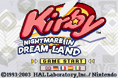

Kirby - Nightmare in Dream Land (Europe) (En,Fr,De,Es,It) (Virtual Console)
SRAM 256K Save Format Mapped (Family Spec)
Cartridge Identity
- Game Code
A7KP(FamilyA7K)- Header Title
AGB KIRBY DX- Maker / Revision
01/ rev0- ROM Size
- 16.0 MiB (16,777,216 B)
- Save Media
SRAM 256K- SHA-256
1038802e5d1566874df3ee151e791cfaa37fef6eeadbc4f209aa13c0fa7fc738
Screenshots


Battery Save Format Specification (Family Shared)
This release shares its save architecture with canonical family reference Hoshi no Kirby - Yume no Izumi Deluxe (Japan) (Family
A7K).
Open Family Save Format Spec (A7KJ)Download save-format.json
- Canonical Specification
A7KJ· 6 mapped fields · 0 verified checksum(s) · Confidence: LOW- gbakit Built-In Support
- JSON schema download available
Observed Battery Save Layout
- Fill Byte & Active Size
0xFFfill · 720–720 / 32,768 B active (entropy 0.59 bits/B)- Active Offset Ranges
0x200–0x277,0x300–0x377,0x400–0x477,0x500–0x577,0x600–0x677,0x700–0x777(6 total)- ASCII Magic / Headers
- None detected
- Observed Variable Regions
- 0 bytes across 0 spans: None
- Candidate Checksum/Counter Spans
- None
Hardware MMIO Subsystems
ppu_display0x8001280
Regional Variants & Revisions (Family A7K)
- Hoshi no Kirby - Yume no Izumi Deluxe (Japan) (
A7KJ, 8 MiB) - Hoshi no Kirby - Yume no Izumi Deluxe (Japan) (Virtual Console) (
A7KJ, 8 MiB) - Kirby - Nightmare in Dream Land (Europe) (En,Fr,De,Es,It) (
A7KP, 16 MiB) - Kirby - Nightmare in Dream Land (USA) (
A7KE, 8 MiB) - Kirby - Nightmare in Dream Land (USA) (Virtual Console) (
A7KE, 8 MiB)